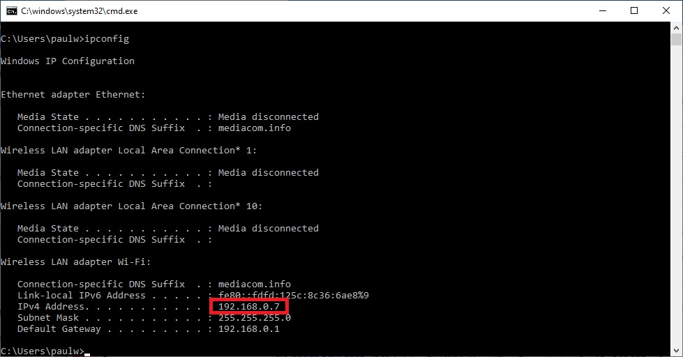
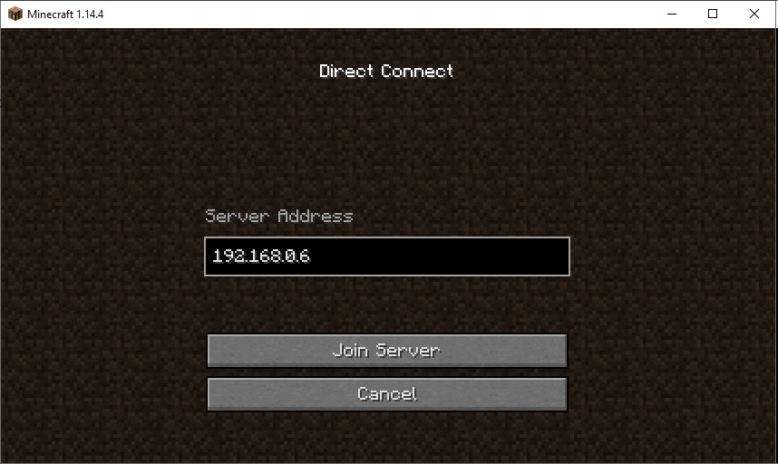

How to play with others on the local (home) network
Here are the requirements to play with others on your home server:
- You need to know the ip address of the computer running your server (use ipconfig)
- You must select multiplayer, direct connect and enter the computer address PLUS the port: 25565
- Each player must have their own mine craft account
To find the local ip address of your server computer
To determine ip address: cntl-r, cmd, ipconfig

Look for a 192.168.0.X address which is your local ip address (assigned by the router)
It is the local ip address of the computer you are running the server on
The other player will then use this address address to connect:
From the game select Multiplayer, Direct Connect and then type in the address, and then Join Server
